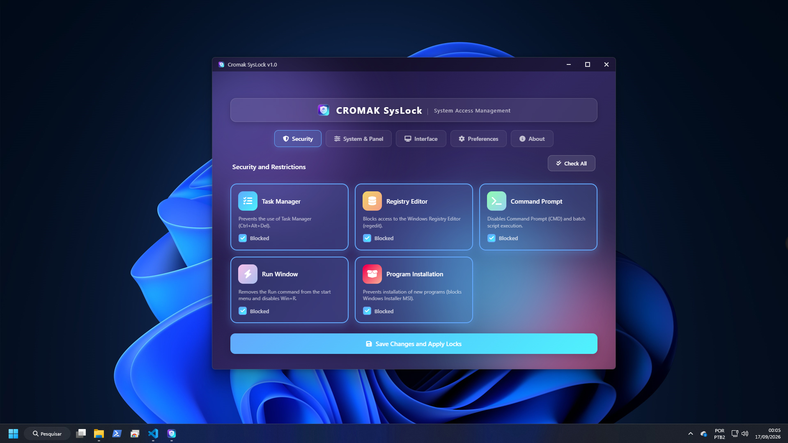
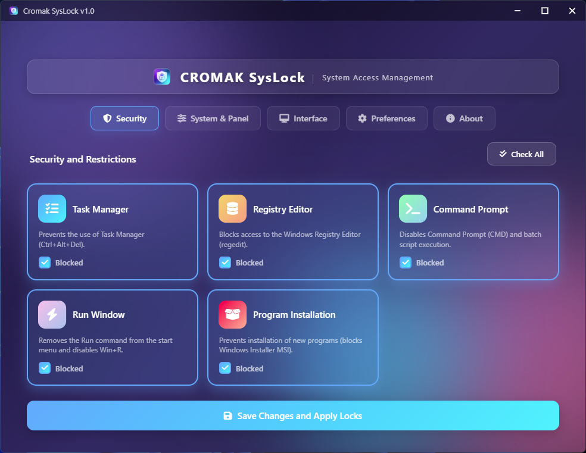
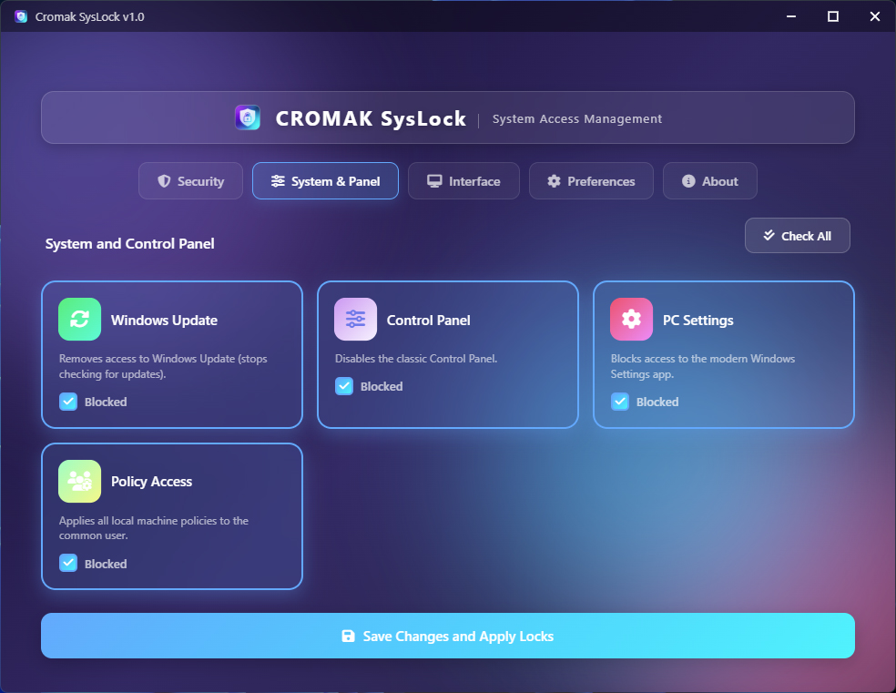
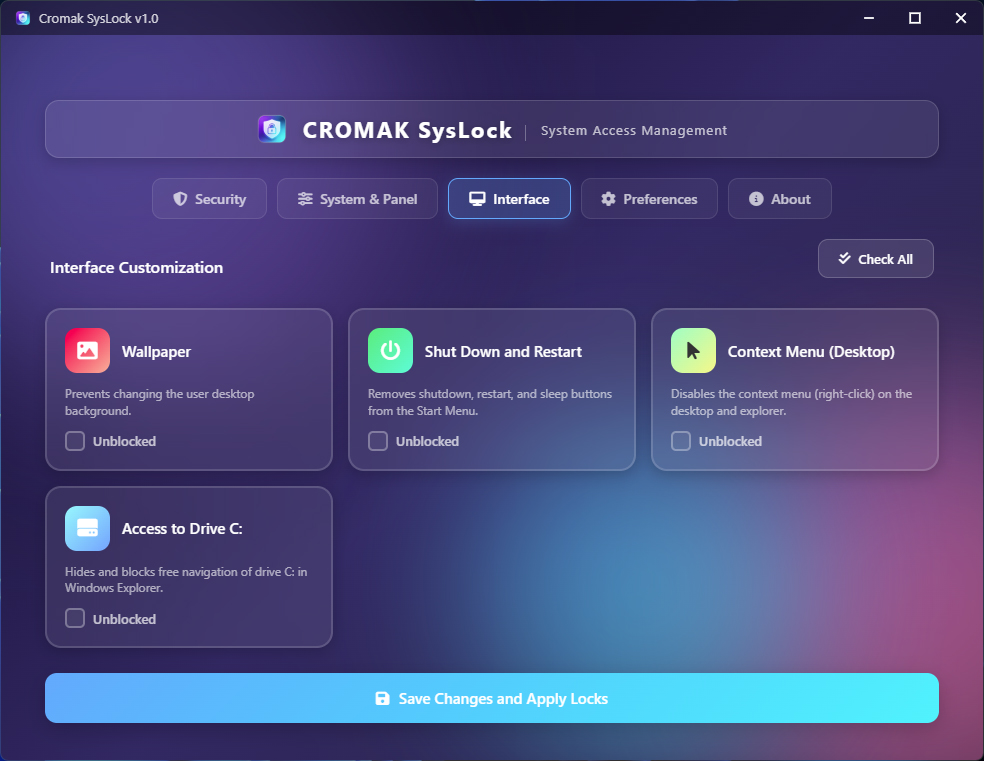

Cromak SysLock
Assuma o Controle Total das Restrições do Windows
Versão: 1.0 (Freeware / Ferramenta Administrativa)

Proteção Profunda, Gerenciamento Simples
Esqueça a navegação exaustiva pelo Editor de Políticas de Grupo (gpedit.msc) ou modificações perigosas no Registro. O Cromak SysLock traz o poder da administração corporativa para uma interface limpa, segura e amigável, permitindo que você restrinja ou libere acessos críticos em poucos segundos.
🔒 Bloqueios de Sistema Crítico
Desabilite instantaneamente ferramentas que podem comprometer a integridade da máquina. Com um único clique, impeça a abertura do Gerenciador de Tarefas (Ctrl+Alt+Del), Editor de Registro (regedit) e Prompt de Comando (CMD).
🛑 Prevenção de Modificações
Impeça instalações indesejadas bloqueando o Windows Installer (MSI). Restrinja o acesso ao Windows Update e aos painéis de configuração clássicos e modernos, garantindo que o sistema permaneça exatamente como você configurou.
🖥️ Personalização Restritiva
Bloqueie a alteração do plano de fundo da área de trabalho, oculte a unidade C: para evitar exploração de arquivos vitais e desative o menu de contexto. Perfeito para quiosques, computadores públicos ou ambientes corporativos monitorados.
Tudo o Que Você Precisa em Uma Só Tela
O painel unificado do SysLock foi projetado com elegância e usabilidade em mente. Ele separa cada nível de acesso em categorias intuitivas para que você tenha controle absoluto do sistema operacional sem perder tempo procurando opções escondidas.
Aba Segurança: Controle de Ponta a Ponta
A primeira aba centraliza as políticas essenciais de sobrevivência do sistema. Aqui você pode remover as engrenagens de manutenção da mão do usuário comum com apenas um clique. Bloqueie o Gerenciador de Tarefas para evitar finalização forçada de seus processos, esconda o Editor de Registro contra manipulações indevidas e impeça instalações silenciosas bloqueando a janela de Instalação de Programas (MSI).

Aba Sistema & Painel: Blindagem Administrativa
Projetada para blindar o computador, esta seção gerencia os acessos de configuração global. Limite o Windows Update para impedir atualizações inesperadas que quebrem softwares corporativos, e proíba a abertura do Painel de Controle e das Configurações do PC. Além disso, conta com um botão exclusivo de manuseio de Políticas Locais (GPO), oferecendo facilidade absurda no reset e deploy de regras no ambiente.

Ação Instantânea
Chega de reiniciar o computador apenas para ver os efeitos de uma diretiva de grupo. O SysLock aplica grande parte de suas travas de forma imediata através de uma reinicialização transparente do Explorer e gravação nativa no Registro.
Manutenção de GPO
Além de configurar restrições avulsas, o utilitário possui um poderoso recurso integrado de limpeza de cache de GPO e aplicação forçada (gpupdate), permitindo que você resete as diretivas com segurança.
Multi-idioma Dinâmico
Uma interface que atende profissionais em qualquer lugar, totalmente traduzida de forma dinâmica para Português, Inglês e Espanhol. O programa lembra suas escolhas em um arquivo offline seguro.
Engenharia Segura, Portátil e Confiável
-
Executável Único (Portable)
Distribuído em um prático formato ".EXE" independente. O SysLock não requer instaladores complexos ou dependências que fiquem rodando no sistema, tornando-se o companheiro ideal em qualquer pendrive de um técnico de TI.
-
Tratamento Nativo de Diretivas
Ao invés de depender de scripts amadores, o programa utiliza as APIs nativas de Windows Registry (winreg) para gravação segura na memória (HKLM e HKCU), minimizando taxas de corrupção ou falhas de permissão.
-
Privacidade Absoluta (Zero Telemetria)
A Cromak Technology leva os seus dados a sério. O SysLock funciona de forma 100% offline, não conecta-se a servidores externos, não envia relatórios e armazena suas configurações apenas na máquina do cliente.
⚠️ Uso e Nível Administrativo
O Cromak SysLock aplica restrições profundas ao sistema e requer execução com privilégios de Administrador. Tenha cautela ao bloquear o Editor de Registro e o Prompt de Comando simultaneamente, para não trancar a si mesmo fora das opções avançadas de recuperação do sistema operacional.

Compatibilidade de Sistema
Homologado rigorosamente para os ambientes modernos da Microsoft, utilizando a biblioteca WebView2 de alta performance gráfica.
Faça o Download do SysLock
Disponibilizamos o Cromak SysLock em modelo de Licença Dupla: Freeware para testes de usuários e comercial para administradores.
Uso Pessoal (Freeware)
- Bloqueio de Tarefas & Regedit
- Restrições Totais de Interface
- Manutenção Local de GPO
- Formato Portátil & Seguro
- Licença para Redes Corporativas
Apoiador do Projeto
- O software é idêntico, mas:
- Você financia novos updates
- Ajuda a manter a Cromak online
- Nosso eterno agradecimento ❤️
🔒 Desenvolvido com excelência e orgulho pela Cromak Technology.